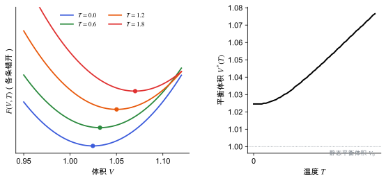

位置、路径与目录
准简谐近似与热膨胀
方法节点领域：统计力学与采样研究线：结构预测与能量景观v0.2 · 2026-11-10
草稿已有正文，但来源和推导还没有核查完，不能当作定论。
让声子频率随体积变化，从而得到热膨胀和有限温度结构；以及这种近似在哪里失效。
严格的谐振近似里，振动频率与体积无关，晶体不会热膨胀。真实晶体受热会膨胀，原因是势能的非谐性：体积变大，原子间的“弹簧”变软，频率降低，振动熵增加，自由能下降。
准简谐近似 (quasi-harmonic approximation, QHA) 用一个简单的办法把这一点包含进来：在每一个体积上做谐振声子计算，让频率依赖于体积；然后在每个温度下，找出使自由能最小的体积。
于是：
- 0 K 时，零点能也随体积变化，所以平衡体积已经比静态能量最低的体积略大（零点膨胀）。
- 温度升高，热振动的贡献增大，平衡体积继续变大。

用模型状态方程和 Grüneisen 关系真实计算（约化单位）：E(V) 取二次型，四个频率按 ω∝V^(−γ) 变化，γ=2。左：不同温度下的 F(V,T)，圆点是极小（曲线竖直错开以便比较）。右：平衡体积随温度增大；T=0 时已经大于静态平衡体积 V₀（零点膨胀）。
| 符号 | 是什么 | 图里对应 |
|---|
| V | 晶胞体积 | 左图横轴 |
| F(V,T) | 某温度下的自由能 | 左图各条曲线 |
| V^{*}(T) | 该温度下的平衡体积 | 左图圆点；右图黑线 |
| V_0 | 只看静态能量时的平衡体积 | 右图灰色点线 |
实际做法：取几个到十几个体积，每个体积优化内部坐标、算声子，再对 E_{\mathrm{static}}(V) 拟合状态方程，对频率或自由能插值，最后对每个温度求极小。phonopy 提供了这一流程的实现 [Togo & Tanaka 2015]。
各向异性晶胞
单斜、正交等低对称晶体在不同方向上的膨胀不同。只沿体积做 QHA 会把晶胞形状固定。更完整的做法是对多个晶格参数做网格或用应力驱动，代价成倍增加 [Mounet & Marzari 2005]。
- 分子晶体热膨胀大：分子间的弱相互作用非谐性强，室温晶胞与 0 K DFT 晶胞可能有明显差别。与实验晶胞比较之前，应考虑零点膨胀和热膨胀。
- 对压电的影响：d_{16} 依赖晶胞和弹性常数（见 压电张量）。一种做法是用 QHA 得到 300 K 晶胞，再在这个晶胞上算压电响应，与 0 K 结果比较。
- CSP 排序：QHA 的 G(T) 比固定体积的谐振自由能更接近实验条件，但每个候选结构要算多组声子，常用 MLIP 降低代价（见 MACE 与等变消息传递）。
- 色散修正是关键：E_{\mathrm{static}}(V) 的形状由色散决定，没有色散的 PBE 会给出错误的体积依赖（见 色散校正）。
- 体积范围太窄或太宽：太窄插值不准，太宽会进入非谐或不稳定区域。
- 各体积的计算设置不一致：例如 k 点、截断能不同，会在 E(V) 上叠加锯齿噪声。截断能还会通过 Pulay 应力影响 E(V)（见 平面波基组与截断能）。
- 只做各向同性 QHA：对低对称分子晶体，晶胞形状的变化可能比体积变化更重要。
- 把 QHA 结果当成高温真值：接近熔点或有分子转动时要用 MD 交叉检查。
相关条目自由能与熵
参考资料
论文Baroni et al. 2010
S. Baroni, P. Giannozzi, E. Isaev, Density-Functional Perturbation Theory for Quasi-Harmonic Calculations, Rev. Mineral. Geochem. 71, 39 (2010)
位置：准简谐近似的公式与实现
尚未实际查阅，目前只是拟查阅书目
论文Togo & Tanaka 2015
A. Togo, I. Tanaka, First principles phonon calculations in materials science, Scr. Mater. 108, 1 (2015)
位置：有限位移法、超胞、动力学矩阵与声子色散（phonopy）
尚未实际查阅，目前只是拟查阅书目
论文Mounet & Marzari 2005
N. Mounet, N. Marzari, First-principles determination of the structural, vibrational and thermodynamic properties of diamond, graphite, and derivatives, Phys. Rev. B 71, 205214 (2005)
位置：各向异性准简谐计算的实例
尚未实际查阅，目前只是拟查阅书目
论文雷达里的相关论文
按关键词匹配，最近的在前；点开在雷达里阅读。
关联与核验
核验与修订
暂无核验记录。
修订记录
- v0.22026-11-10初稿正文：F(V,T) 与最小化、Grüneisen 参数、热膨胀系数、零点膨胀、各向异性晶胞、适用范围与失效、常见坑；配图 1 张（真实计算模型状态方程）
发现问题
在 GitHub 上公开提交纠错，会附上节点编号和版本，不含你的笔记。
提交纠错